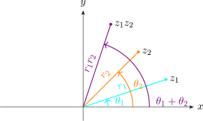

1.3 Polar Coordinates
Let \(r\) and \(\theta \) be polar coordinates of the point \((x,y)\) corresponding to a non-zero complex number \(z = x +iy\). Since \(x = r\cos \theta \) and
\(y = r\sin \theta \).
\(z\) can be written in polar form as \(\, z = r\big [\cos \theta + i\sin \theta \big ]\)
\begin {align*} \text {e.g}\qquad 1 + i & = \sqrt {2}\Big [\cos \Big (\frac {\pi }{4}\Big ) + i \sin \Big (\frac {\pi }{4}\Big )\Big ]\\\\ & = \sqrt {2}\Big [\cos \Big (\frac {-7 \pi }{4}\Big ) + i \sin \Big (\frac {-7 \pi }{4}\Big )\Big ] \end {align*}
Here \(r = \left |z\right | = \sqrt {x^2 + y^2}\,\) and \(\theta \) is an argument of \(z\). We write \(\,\theta = \operatorname {arg}(z)\)
For any given non-zero complex number \(z\), the principle argument or principal value of \(\operatorname {arg}(z)\) denoted, \(Arg(z)\) is
defined as the unique value of \(\operatorname {arg} (z)\) such that \(\, - \pi \leq \operatorname {arg}(z) \leq \pi \).
Example 1.9. Express \(\, -\sqrt {3}- i\,\) in polar form
Solution
With \(x = -\sqrt {3}\) and \(y = -1\), we obtain \(\, r = \left |z\right | = \sqrt {\big (-\sqrt {3}\big )^2 + \big (-1\big )^2} = 2\)
\(\theta = \tan ^{-1}\Big (\frac {1}{\sqrt {3}}\Big ) = \frac {\pi }{6}\)
So \(\operatorname {arg}(z) = \frac {\pi }{6} + \pi = \frac {7\pi }{6}\)
Thus \(\, \displaystyle {z = 2\Big ( \cos \Big (\frac {7\pi }{6}\Big ) + i \sin \Big (\frac {7\pi }{6}\Big )\Big )}\)
Using the principle Argument \[z = 2 \Bigg [\cos \Big (\frac {-5\pi }{6}\Big ) + i\sin \Big (\frac {-5\pi }{6}\Big )\Bigg ]\] In general \(\, \operatorname {arg}(z) = Arg (z) + 2n\pi \quad n = 0, \pm 1, \quad \pm 2, \cdots \)
1.3.1 Multiplication and Division
Suppose that \(\, z_1 = r_1 \big [ \cos \theta _1 + i\sin \theta _1\big ]\,\) and \(\, z_2 = r_2 \big [ \cos \theta _2 + i\sin \theta _2\big ]\,\) where \(\theta _1\) and \(\theta _2\) are any arguments of \(z_1\) and \(z_2\) respectively. Then \begin {align*} z_1z_2 & = r_1r_2\big [\cos \theta _1\cos \theta _2 - \sin \theta _1\sin \theta _2 + i\big (\sin \theta _1\cos \theta _2 + \cos \theta _1\sin \theta _2\big )\big ]\\\\ & = r_1r_2\big [\cos \big (\theta _1 + \theta _2\big ) + i\sin \big (\theta _1 + \theta _2\big )\big ] \end {align*}

Also \(\quad \frac {z_1}{z_2} = \frac {r_1}{r_2}\big [\cos \big (\theta _1 - \theta _2\big ) + i \sin \big (\theta _1 - \theta _2\big )\big ]\)
From this, we can see that
\(\operatorname {arg}(z_1z_2) = \operatorname {arg}(z_1) + \operatorname {arg}(z_2)\)
\(\Big (\frac {z_1}{z_2}\Big ) = \operatorname {arg}(z_1) - \operatorname {arg}(z_2)\)
Consider, \(\, z = r\big (\cos \theta + i \sin \theta \big )\,\)
\( z^2 = r^2\big (\cos 2\theta + i \sin 2\theta \big )\,\)
Using mathematical induction, we can show that \(\, z^n = r^n \big ( \cos (n\theta ) + i \sin (n\theta )\big )\)
Proof
- Step 1:
- \(n = 1\)
\(z' = r'\big ( \cos \theta + i \sin \theta \big )\)
- Step 2:
- Suppose \(\, z^k = r^k \big ( \cos (k\theta ) + i \sin (k\theta )\big )\)
\begin {align*} z^{k + 1} & = z^k\cdot z = r^k \big ( \cos (k\theta ) + i \sin (k\theta )\big )\cdot r \big ( \cos (\theta ) + i \sin (\theta )\big )\\ & = r^{k + 1}\big ( \big (\cos (k\theta )\cos \theta - \sin (k\theta )\sin \theta \big ) + i \big ( \cos (k\theta )\sin \theta + i\sin (k\theta ) \cos \theta )\big )\\ & = r^{k + 1} \big ( \cos (k+1)\theta + i \sin (k + 1)\theta \big ) \end {align*}
So by the principal of mathematical induction \(\, z^n = r^n \big (\cos (n\theta ) + i\sin (n\theta )\big )\,,\quad \forall \, n \geq 0\)
\(\implies \, z^0 = r^0 \big (\cos (0) + i \sin (0)\big ) = 1\)
\(\implies \, z^{-1} = \frac {1}{z} = \frac {1}{r\big (\cos \theta + i\sin \theta \big )}\)
\begin {align*} z^{-1} & = r^{-1} \, \big ( \cos \theta - i \sin \theta \big )\\ & = r^{-1}\, \big (\cos (-\theta ) + i \sin (-\theta )\big ) \end {align*}
\[n> 0 \quad z^{-n} = r^{-n}\, \big ( \cos (-n\theta ) + i\sin (-n\theta )\big )\]
\begin {align*} z^{-n} & = \big (z^n\big )^{-1} = \frac {1}{z^n} = \frac {1}{r^n\,\big (\cos (n\theta ) + i \sin (n\theta )\big )}\\\\ & = r^{-n}\,\big (\cos (-n\theta ) + i\sin (-n\theta )\big )\\ \end {align*}
\(\boxed { z^n = r^n\, \big ( \cos (n\theta ) + i\sin (n\theta )\big )\quad \forall \,n \in \mathbb {Z}}\quad \) De\(-\)Moivres formula
Example 1.10. Compute \(\,z^3\,\) for \( z = -\sqrt {3} - i\)
Solution
In polar form \(\, z = 2\Big [ \cos \Big (\frac {7\pi }{6}\Big ) + i \sin \Big (\frac {7\pi }{6}\Big )\Big ]\)
Here \(\, r = 2\, , \quad \theta = \frac {7\pi }{6}\,\) and \(\, n = 3\). We get
\begin {align*} \big (-\sqrt {3} - i\big )^3 & = 2^3 \Big [\cos 3\cdot \frac {7\pi }{6} + i \sin 3\cdot \frac {7\pi }{6}\Big ]\\\\ & = 8 \Big [ \cos \frac {7\pi }{2} + i \sin \frac {7\pi }{2}\Big ]\\\\ & = -8i\\\\ \end {align*}
Questions on this section
Stuck on something here? Ask below and it stays attached to this topic.